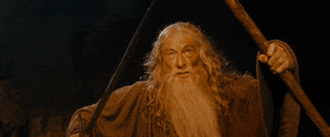

... The Balrog reached the bridge. Gandalf stood in the middle of the span, leaning on the staff in his left hand, but in his other hand Glamdring gleamed, cold and white. His enemy halted again, facing him, and the shadow about it reached out like two vast wings. It raised the whip, and the thongs whined and cracked. Fire came from its nostrils. But Gandalf stood firm. ‘You cannot pass,’ he said. The orcs stood still, and a dead silence fell. ‘I am a servant of the Secret Fire, wielder of the flame of Anor. You cannot pass. The dark fire will not avail you, flame of Uduˆn. Go back to the Shadow! You cannot pass.’...
